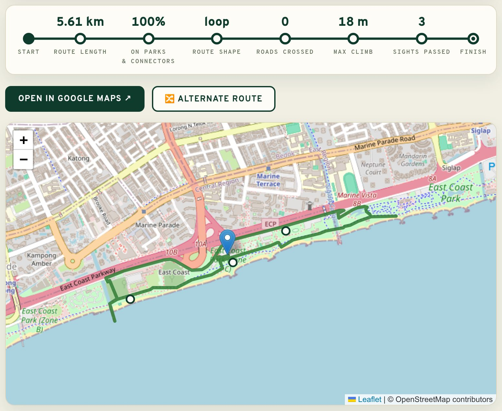

Greenest route first
Every path around you is scored: connectors, park paths and waterside promenades are cheap, big roads are expensive. The route bends toward the green.
Greenest routes · parks, connectors & waterfronts
Tell it where you are and how far you feel like running. It finds the greenest possible loop — park connectors, gardens, waterfronts — and hands it to you as a Google Maps link you can follow step for step.
Plan my run — it's freeNo sign-up · No tracking · Runs entirely in your browser

Every path around you is scored: connectors, park paths and waterside promenades are cheap, big roads are expensive. The route bends toward the green.
A loop of your target distance, a one-way "straight" run, or one press of Alternate route for a genuinely different loop from the same door.
Real elevation data shapes the route. Keep it flat on easy days, or ask it to find you a climb when you're training.
Turn on Prioritise sights and the loop leans past viewpoints, monuments and gardens — your easy run doubles as a tour.
Roads where pedestrians are banned never even enter the map data, and every road crossing on your route is counted and reported.
One tap opens your route as walking directions with waypoints that pin it onto the green paths. No new app to install.
Search any place — 238 countries, with extra polish (postal codes, curated spots) in Singapore — or just use your location. Set your distance.
The OpenStreetMap walking network around you is downloaded and weighted for greenness, hills, crossings and sights, then searched for the best loop.
Check the route on the map, open it in Google Maps, and go. Want variety? Alternate routes steer away from paths you've already been given.
Completely. There's no account, no key and no server doing the work — the whole planner runs in your browser on free, open data (OpenStreetMap, OneMap, Photon and open elevation tiles). It's open source, too.
No. Your location is used in your browser to plan the route and never sent to us — there is no "us" to send it to. No analytics, no cookies, no ads.
It tries hard not to. Roads where pedestrians are banned are excluded outright, big roads cost 6× more than park paths in the search, and the Stay in parks toggle makes streets a last resort. When a road can't be avoided, the stats tell you exactly how many crossings to expect.
Pick from 238 countries. Singapore is the default and the most polished — it's where the planner was born, on the Park Connector Network — but the routing works anywhere OpenStreetMap does, which is pretty much everywhere.
Greener beats exact: the planner aims within about a fifth of your target and shows the true length before you set off. A 5 km ask might get you a lovely 5.4 km — call it a bonus.
Yes — press Alternate route. Each press steers away from the paths you've already been given, and your recent routes stay one click away as tabs.